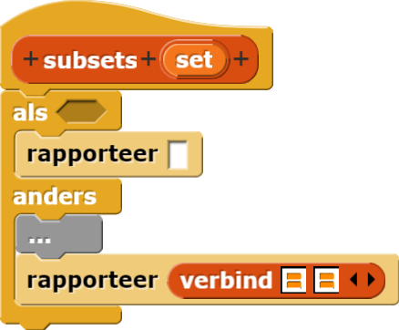

- Hoeveel subsets heeft de lege set {}?
- Wat moet
subsets rapporteren in het basis geval? Dit is best lastig!
- Hoeveel subsets van {Wafel, Appel, Sinasappel, Banaan} bevatten Wafel? Hoeveel niet?
- Beschrijf "de subsets van {Wafel, Appel, Sinasappel, Banaan} die niet Wafel bevatten" zonder de woorden
"bevatten niet" te gebruiken.
Van het Snap! bestand-menu, kies "Bibliotheken..." onderaan kies dan
"List Utilities" om append en andere functies voor lijsten te laden.
- Hier is een versie van hoe de code eruit zou kunnen zien met veel dingen weggelaten...
